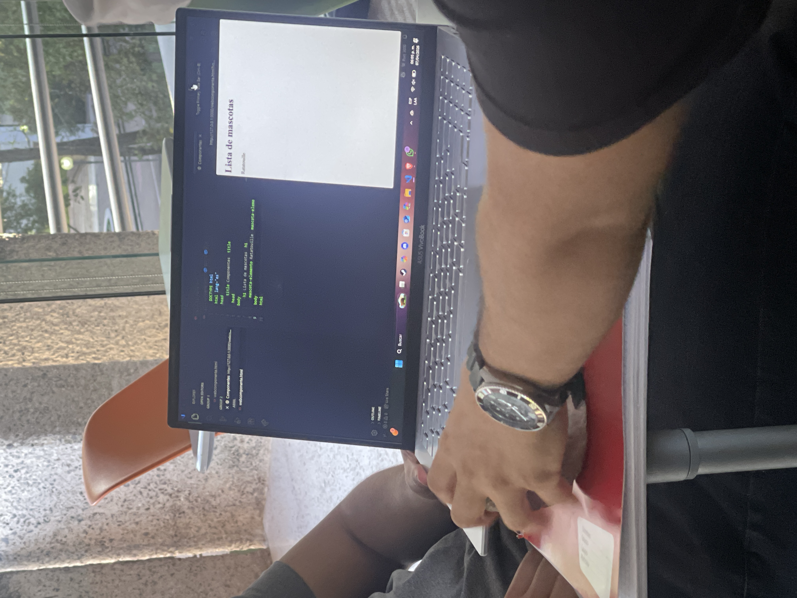
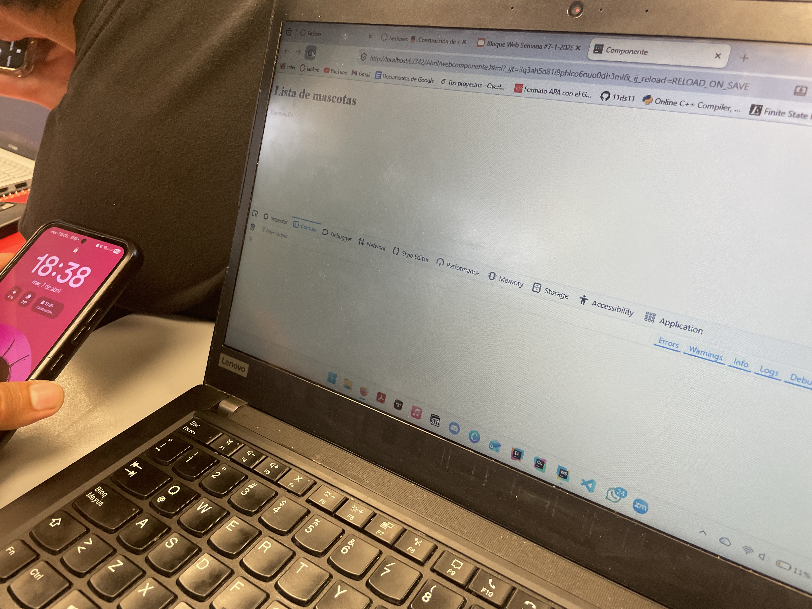
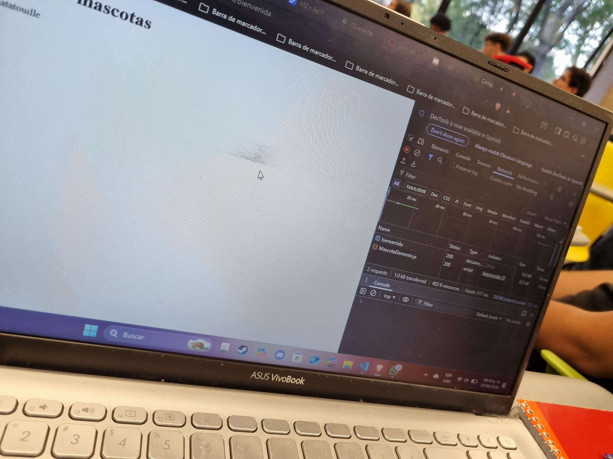
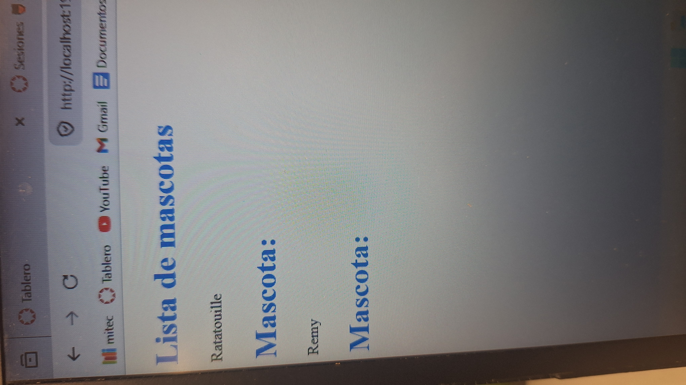
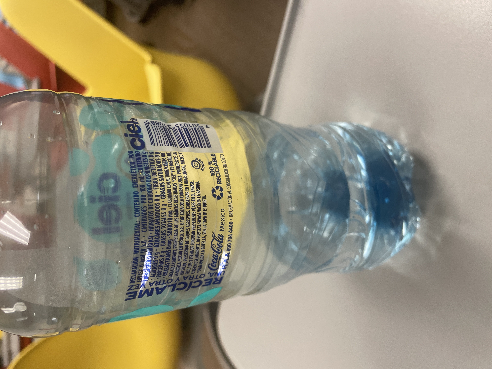
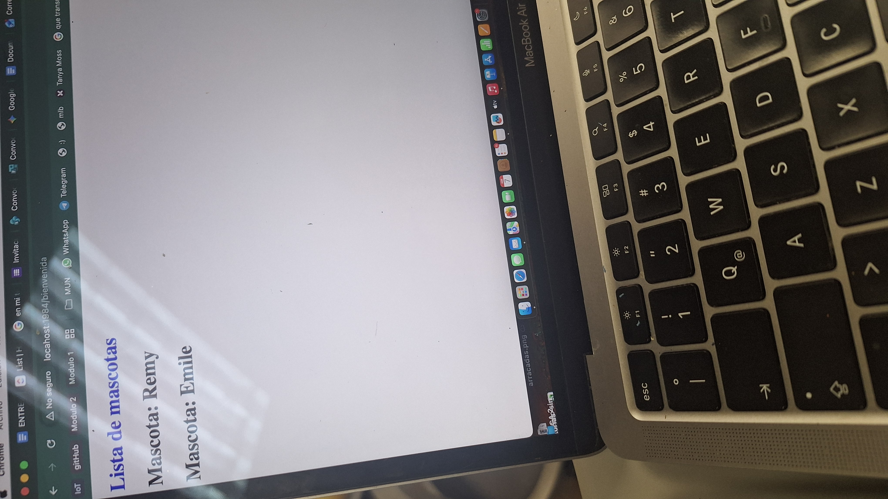
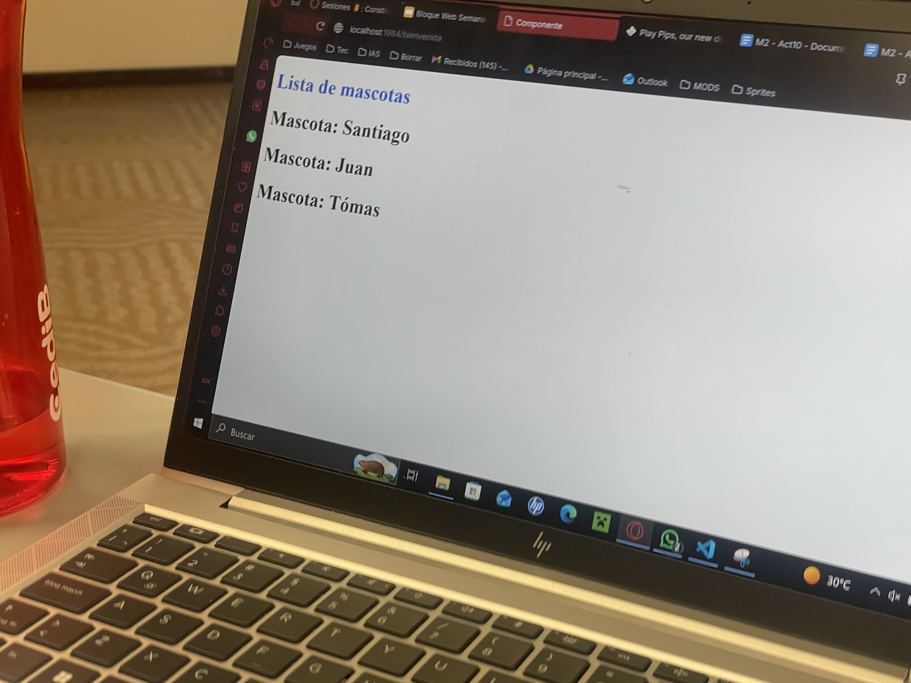
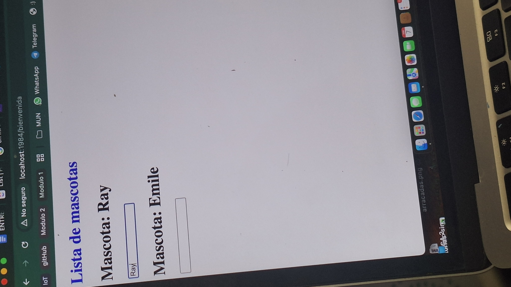
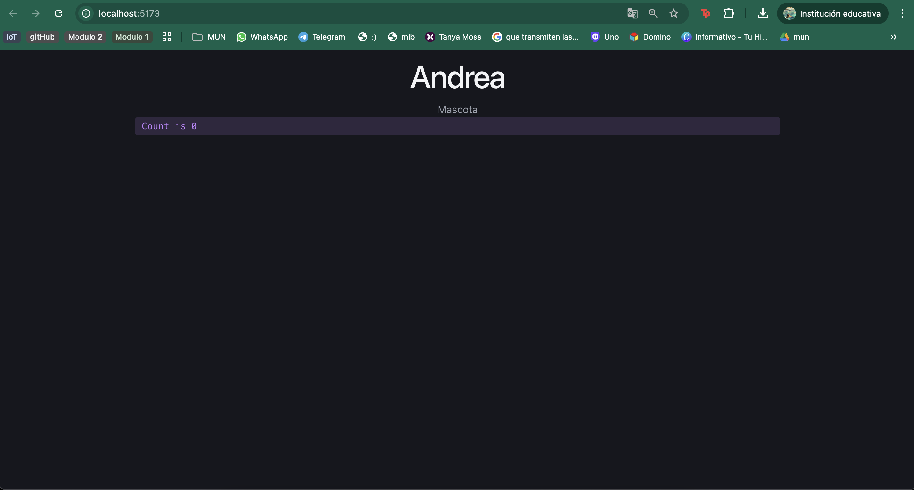

Fotos de la actividad de excursión
1. Foto del componente no natural

2. Foto del código de webcomponente.html de un@ de tus compañer@s

3. Foto de la consola del navegador viendo webcomponent.html de otr@ de tus compañer@s

4. Foto de la consola y página viendo webcomponent.html de tu compañer@ de la pasada excursión

5. Foto donde se vean claramente los 3 elementos azules de webcomponents.html

6. Foto de los ingredientes del alimento que estás comiendo

Investiga si hay alguno que sea dañino para la salud o si está prohibido en otro país
No existen evidencias que digan que el agua embotellada Ciel (de The Coca-Cola Company) esté prohibida para su venta o consumo en algún país del mundo. Es de buena calidad y segura para el consumo humano.
7. Foto donde se vean claramente Remy y Ratatouille

8. Foto donde se vea modificación en la página

9. Foto del final de la excursión

10. Foto con Svelte + Vite

Preguntas
1. ¿Qué es un componente?
Escribe tu respuesta y añade una explicación de lo que trajiste.
Para mí, un componente es como un molde reutilizable. Permite encapsular atributos y poderlos personalizar.
2. ¿Svelte + Vite qué son?
- Svelte
- Framework de JavaScript
- Para hacer interfaces de usuario
- No usa DOM virtual
- Vite
- Herramienta de construcción
- Extremadamente rápida
- Servidor de desarrollo + empaquetador